Homework 1: Hypothesis testing#
This assignment has 4 parts. Each part is graded as listed in its heading.
Homework 1.1 (24 points)#
Learning objectives:
In this assignment, we will get started using Python in a Google Colab notebook. We will explore how to:
load data
manipulate arrays
visualize probability density functions (PDFs) and cumulative distribution functions (CDFs)
z-score data
Part 1 (2 points)#
First, load the package ‘numpy’.
Numpy is a widely used python package that contains a large number of mathematical functions that we will use for various analyses throughout the course. It also adds support for multidimensional arrays that we will store data in. Give numpy the alias ‘np’ for brevity. To do this, type:
import numpy as np
For those who are familiar with Matlab but just getting started with Python, here is a useful cheat sheet:
https://numpy.org/doc/stable/user/numpy-for-matlab-users.html
# Your code here
Part 2 (2 points)#
Next, load
matplotlib.pyplotand call itpltfor brevity.
pyplot is a part of the larger matplotlib package, which contains powerful functionality for plotting data using similar synatx to Matlab. Thus, pyplot is a subpackage of matplotlib.
Similarly, load in
scipy.statsand call itstats.
# Your code here
Part 3 (2 points)#
Load a dataset that includes height and weight data from 25,000 18-year-olds. These data are stored in a .csv (comma separated values) file at the following URL:
https://raw.githubusercontent.com/BU-BME-DataSci-ML/Spring-2023/main/Homework1/SOCR-HeightWeight.csv
To do this, use the genfromtxt function in numpy (i.e. np.genfromtxt) to load the data directly from this URL into a variable called HeightsAndWeights. Since this is a .csv file, you will need to set the delimiter to ‘,’ (a comma in single quotes). The first row in the file contains column labels. You can use the option skip_header=1 to skip the first line and only read the numerical data.
You should be able to mouse over the function name in your code to see more information about it. Select ‘open in tab’ to see more information about genfromtxt or view the help page online https://numpy.org/doc/stable/reference/generated/numpy.genfromtxt.html
You can get additional information about other fuctions in a similar manner.
# Your code here
Part 4 (2 points)#
Make some easy-to-use variables.
Assign the height data (in the second column of HeightsAndWeights) to a variable called
heights. Similarly, assign the weight data (the third column) to a variable calledweights.Calculate the mean and standard deviation of the heights data and assign these values variables called
meanHeightandstdHeightusing the numpy functionsmeanandstd.
🚩 Common mistake: Python counts from 0, so the “second column” of an array is index 1, not 2. Indexing with the wrong number runs without error but silently gives you the wrong variable (or fails at the last column), so check what you extracted, for example by looking at its first few values.
# Your code here
Part 5 (2 points)#
Next, lets plot some things that allow us to get a sense of our data.
Use the
subplotsfunction inmatplotlibto create a 1x3 row of three axes like this:
fig, axs = plt.subplots(1, 3)
Here, axs is a vector of axes handles. A handle is an identifier for a graphics object that can be used to refer to and modify that object. If you click the {x} icon on the left hand side of your notebook, you will see all of the variables in your workspace. You should see, for example that this command created an n-dimensional array (ndarray) called axs with three elements.
Plot a histogram of the height data in the first subplot. Make a histogram with 50 bins.
axs[0].hist(heights, bins = 50)
Plot a histgram of the weight data in the second subplot. Again, use 50 bins.
Make a scatter plot (using
axs[].plotinstead ofaxs[].hist) with the height data on the x-axis and the weight data on the y-axis in the third subplot. Show each data point as a black dot and set the alpha (transparency) of the points to 0.1.
In all cases, label your axes appropriately. You can use the following commands to size your plots nicely:
fig.set_size_inches(16, 4)
plt.tight_layout()
You can also use this command to change the fontsize associated with axes you create (must be run before you call plot commands).
plt.rcParams.update({'font.size': 16})
Your plots should look like the ones below:
# Your code here
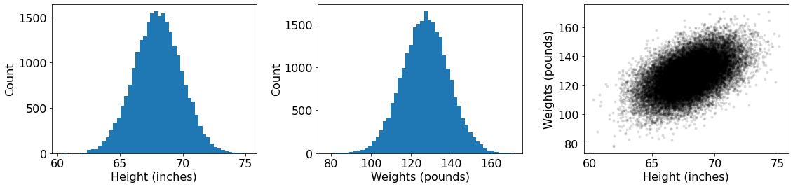
Part 6 (2 points)#
Are heights normally distributed? No need for statistical tests yet, lets just take a look by eye.
Use
plt.histto make a histogram of the height data just as you did above. This time, apply the optiondensity=true, which normalizes bin counts so that the sum of all bins equals 1.On the same plot, display the probability density function (PDF) of a normal distribution that has the same mean and standard deviation as your data. We’ll do it two ways.
Method 1: First, we will calculate the PDF based on the familiar equation for a normal distribution.
\( P(x,\mu,\sigma) = \frac{1}{\sigma\sqrt{2\pi}} e^{(-\frac{{(x - \mu)}^{2}}{2\sigma^{2}})}\)
Step 1: Create a vector of heights at which we will calculate probabilities. Use the numpy function
arrangeto create a vector calledxdatawith a minimum value ofmeanHeight-5, a maximum value ofmeanHeight+5, and increments of 0.1.
Step 2: Find the probability density at each point using the equation above. You may need to use numpy functions such as
np.sqrt,np.pi, andnp.exp.
Step 3: Plot the normal pdf as a black line with a width of 2.
Method 2: Second, we will find the probability density function using built in functionality of scipy.stats.
Step 1: Create a normal random variable called
heightDistwith the same mean and standard deviation as your data usingstats.norm.
**Step 2:**Create a variable that contains the probability densities at each point in
xdataby callingheightDist.pdfwithxdataas the argument.
Step 3: Plot the normal pdf determined using the stats package as a red dotted line with width 3.
Add a legend to this plot that labels the curves determined using Method 1 and Method 2.
🚩 Common mistake: density=True makes the bar areas (height times bin width) sum to 1, not the bar heights. If you leave it off, the histogram is in raw counts and a PDF drawn on the same axes will look flat near zero.
See the lecture notes on The normal distribution for the normal PDF.
# Your code here
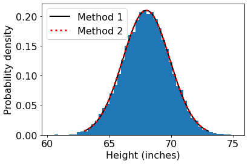
It seems these data are normally distributed!
Part 7 (2 points)#
Now, suppose you meet someone named Bob. Bob is 5’4”. What is the chance that Bob is 18 years old (i.e. that this value was drawn from the same distribution) based solely on their height?
First, lets see where Bob falls in the normal distribution.
Use either method above to plot the pdf of the normal distribution, just as you did above.
Calculate the probability density at 5’4” (64 inches) using the normal equation or
scipy.stats.Plot the probability density at 64 inches on the same axes as a blue dot with
markersizeset to 20.
🚩 Common mistake: Heights in this dataset are in inches, so 5’4” is 5 x 12 + 4 inches, not 5.4. Entering the wrong number runs fine but places Bob at the wrong spot on the distribution.
# Your code here
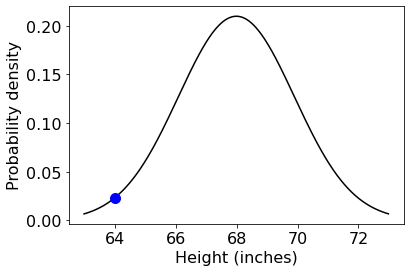
Part 8 (2 points)#
Lets calculate how far Bob’s height is from the mean height in our dataset
Calculate the difference between Bob’s height and
meanHeightand assign this value to a variable calleddeltaHeight.Display the answer in plain text using a strategy like this:
print("Individual is " + str(deltaHeight) + " shorter than average")
or, if you want to format the output better…
print(f'Individual is {deltaHeight:.2f} inches shorter than average')
# Your code here
Individual is 3.9931135967999865 shorter than average
Individual is 3.99 inches shorter than average
Part 9 (2 points)#
Is this a lot? It is more informative to think about this in terms of the width of the distribution - the standard deviation.
How far is Bob’s height from the mean of the distribution in terms of standard deviations?
Divide
deltaHeightby the standard deviation of the height measurements,stdHeight.
This is the z-score of Bob’s height relative to the normal distribution you determined.
\( z = \frac{(x - \mu)}{\sigma} \)
Report the z-score of Bob’s height using a
printstatement and appropriate text.
See the lecture notes on The Z-score for how z-scores are defined and used.
# Your code here
z score: x.xx
Part 10 (2 points)#
If we apply the same math to our original heights data, the distribution now looks like a normal distribution with mean 0 and standard deviation 1. This is the standard normal distribution.
Plot a histogram of the full z-scored
heightsdata.Plot the PDF of the standard normal distribution using Method 2 from Part 6 as a black line. You’ll need to create a standard normal random variable object like this:
zDist = stats.norm(0, 1)
and then find its PDF using code such as this:
zPDF = zDist.pdf(x)
where x now spans the interval from -4 to 4.
Plot the z-scored measurement of Bob’s height on the same axis as a red dot of size 20.
# Your code here
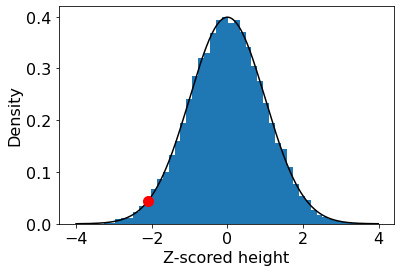
Part 11 (2 points)#
OK, now we are getting close to an answer!
Next, lets visualize the cumulative distribution function (CDF) of the standard normal. This is:
\( P(X<x) = {\frac{1}{\sqrt {2\pi}}} \int _{-\infty }^{x}e^{-x^{2}/2} dx \)
We’ll use scipy.stats to calculate this integral for us.
You’ve already created a standard normal random variable,
zDist, which we’ll use. Find the CDF of the standard normal and plot just as you did for the PDF in part 10, but usingZdist.cdfinstead ofzDist.pdf.Plot the PDF on the same axes in blue with
alpha=0.2for referenceOn the same axes, plot the cumulative probability at the location of Bob’s z-scored height as a red dot.
See the lecture notes on PDFs and CDFs for the relationship between a PDF and a CDF.
# Your code here
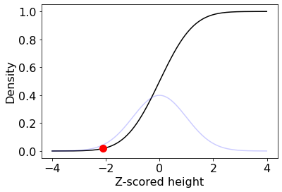
Part 12 (2 points)#
Now, we will find the likelihood of Bob’s height being 64 inches or less under the assumption that Bob’s height was drawn randomly from a population of 18 year olds.
We’ll do this two ways.
Method 1: Find the probability using scipy.stats.
Calculate the area under the standard normal pdf to the left of our data point (Bob’s height, z-scored). This is the value of the cdf at the same point point. Use
scipy.statsto find this value and print it.
Method 2: Calculate the proportion of data points in our heights dataset that are 64 inches or less.
# Your code here
There is a = x.x % chance of randomly choosing a height 64 inches or lower using Method 1
There is a = x.x % chance of randomly choosing a height 64 inches or lower using Method 2
Homework 1.2 (34 points)#
Learning objectives:
In this assignment, we will refine our python skills and delve into hypothesis testing. We will explore:
Sampling
Sample statistics and their distributions
The t distribution and t-test
NOTE: Include axis labels in all plots!
Part 1 (2 points)#
Load the same libraries that we used in Homework 1.1.
numpy(asnp)matplotlib.pyplot(asplt)scipy.stats(asstats)
Now is also a good time to set the default font size to 16.
# Your code here
Part 2 (2 points)#
Load the same height and weight data taken from 25,000 18-year-olds as in Homework 1.1. These data are stored in a .csv (comma separated values) file at the following URL:
https://raw.githubusercontent.com/BU-BME-DataSci-ML/Spring-2023/main/Homework1/SOCR-HeightWeight.csv
Use the genfromtxt function in numpy (i.e. np.genfromtxt) to load the data directly from this URL into a variable called HeightsAndWeights.
Make an easy-to-use variable called
heightsform the second column ofHeightsAndWeights
# Your code here
Part 3 (2 points)#
Suppose we measure the heights of three students taking BE 700 to be 70.5”, 72”, and 68”.
Create a numpy array containing these values called
classHeights.Print the array
# Your code here
[70.5 72. 68. ]
Part 4 (2 points)#
Visualize our measurements (classHeights) and the distribution of the reference data (heights) on the same axis.
Create a normal random variable with the same mean and standard deviation as the
heightsdataset and call itheightDist.Plot the probability density function (PDF) of
heightDistover the relevant range of heights.On the same axes, plot a histogram of
classHeights. Setdensity=Trueandalpha=0.2. For this histogram, set the bin edges explicitly asbins=np.arange(60, 74)so that each bin has a width of 1 inch
# Your code here
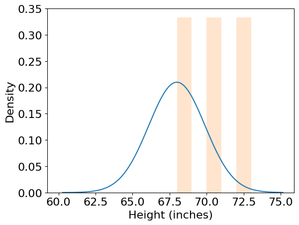
##Step 5 (2 points)
Calculate some descriptive statistics and print them.
Mean value of
heightsMean value of
classheightsStandard deviation of values in
heightsStandard deviation of values in
classHeights
Display them as below:
print(f'Mean height in dataset = xx.xx inches')
print(f'Mean height in class = xx.xx inches')
print(" ")
print(f'Standard deviation of heights in dataset = x.xx inches')
print(f'Standard deviation of heights in class = x.xx inches')
Mean height in dataset = xx.xx inches
Mean height in class = xx.xx inches
Standard deviation of heights in dataset = x.xx inches
Standard deviation of heights in class = x.xx inches
Part 6 (2 points)#
z-score
classHeightsusing the mean and standard deviation ofheights. Call this variableZclassHeights.Plot a histogram of
ZclassHeights.Overlay the PDF of the standard normal distribution. For this you can use
stats.norm.pdf
# Your code here
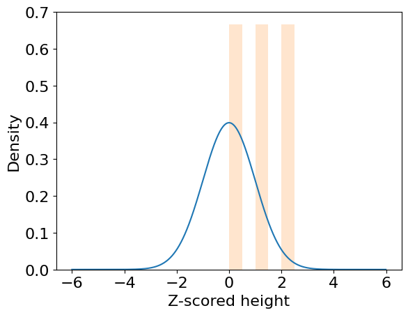
Part 7 (2 points)#
Let’s start to do some more rigorous comparisons of our sample data (classHeights) and our reference dataset (heights).
First, consider the mean of our sample data.
Calculate the z-score of our sample data’s mean and print it.
print(f'Z-scored mean height = x.xx')
Z-scored mean height = x.xx
The mean of these measurements is well within the reference distribution of heights.
Part 8 (2 points)#
Where does the z-score of the sample mean fall within the standard normal distribution?
Plot the CDF of the standard normal distribution and display the location of the sample mean as a red dot with
markersize=20. In order to get the CDF you can usestats.norm.cdfCalculate the value of the CDF at the location of the sample mean and display this value.
What percent of the standard normal distribution is as large or larger than the sample mean? Print this value.
# Your code here
xx.xx% of the standard normal distribution lies to the right of the sample mean
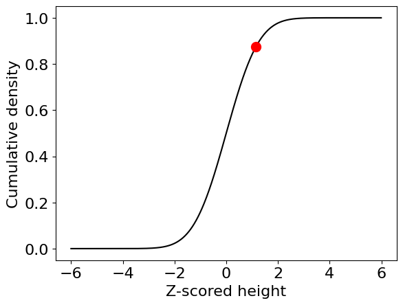
Does this tell us the likelihood of drawing a sample from the reference dataset of 18-year-old heights that has this mean?
NO!
Why? The distribution of the heights data is different than the distribution of the means of random samples drawn from those data.
The mean of our sample is our sample statistic. So what is the distribution of this sample statistic, if not the distribution from which we drew the samples? Let’s try to find out!
First, we’ll randomly select samples from heights with the same number of elements as classHeights and find out empirically what the distribution of the sample means should look like.
Draw a random sample from
heightswith the same number of elements asclassHeightsand find the mean. You can draw random samples from an array usingnp.random.choice.Calculate the mean of this random sample and z-score it.
print(f'Mean of random sample = xx.xx inches')
print(f'Z-scored mean = x.xx')
Mean of random sample = xx.xx inches
Z-scored mean = x.xx
Part 9 (2 points)#
OK, now that we know how to draw random samples, we’ll use this to gain some intuition about the values that we expect sample means to take.
Repeat this calculation 5000 times using a
forloop and store the random sample means as a numpy array.Plot a histogram of the random sample means.
Overlay the PDF of the normal distribution with the mean and standard deviation of
heights.
See the lecture notes on Central Limit Theorem for the distribution of sample means.
# Your code here
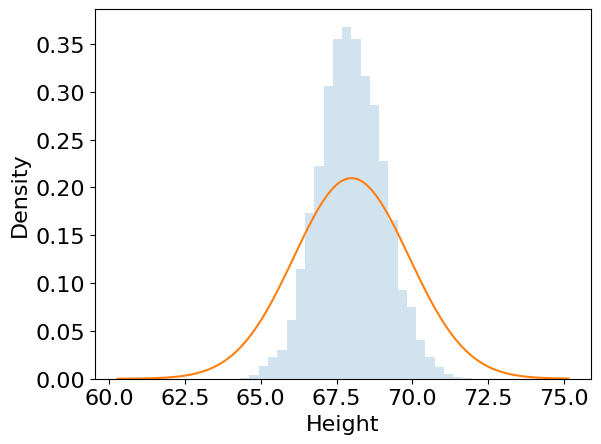
These look different!
This is the central limit theorem in action!
To recall, if we calculate the mean of a sample of random variables
\(\displaystyle {\bar {X}}_{n}\equiv {\frac {X_{1}+\cdots +X_{n}}{n}}\)
the distribution of sample means is a normal distribution with mean, \({\mu}\), and standard deviation, \({\frac{\sigma}{\sqrt {n}}}\). Here \( n \) is the size of the random sample and \({\sigma}\) is the standard deviation of the population.
The width of this distribution is the standard error of the measurement of the mean, \({\frac{\sigma}{\sqrt {n}}}\), rather than the standard deviation of the population, \({\sigma}\).
Part 10 (2 points)#
Let’s see if this prediction holds true.
Plot the histogram of sample means.
Overlay the PDF of a normal distribution with the mean, \({\mu}\), and standard deviation, \(\sigma\), of the
heightsdata, as above.Finally, overlay the PDF of a normal distribution with mean, \({\mu}\), and standard deviation , \({\frac{\sigma}{\sqrt {n}}}\).
# Your code here
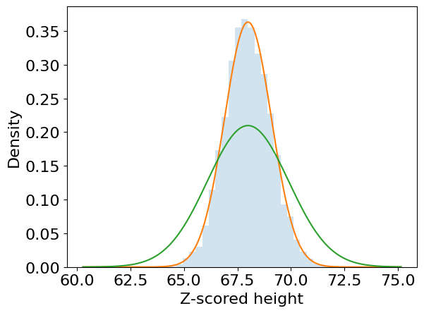
Part 11 (2 points)#
OK! Let’s re-examine where our measurement falls in this new distribution - the distribution of means of random samples of this size (N=3) drawn from the heights dataset.
Plot the PDF of the distribution you found in Part 10.
Now plot where the mean of
classHeightsfalls in this distribution as a red dot.
# Your code here
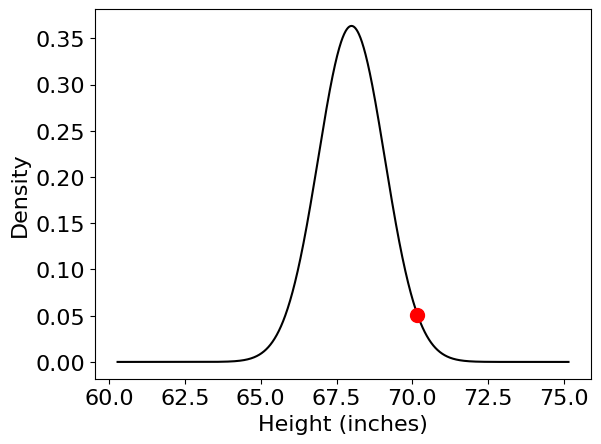
Part 12 (2 points)#
Now, calculate the probability that the mean of classHeights is as large or larger than the measured value. Do this two ways:
Method 1 (Monte Carlo): Directly find the proportion of random sample means larger than the class sample mean. This is the estimated probability of drawing a sample from
heightswith a mean as large (or larger) than the mean ofclassHeights.Method 2 (analytical): Use the cdf of the normal distribution with the same mean as
heightsand standard deviation equal to \({\frac{\sigma}{\sqrt {n}}}\) (the predicted distribution of sample means) to determine the probability of measuring a set of class heights with this mean.
print(f'Probability (Monte Carlo) = x.xx% chance')
print(f'Probability (analytical) = x.xx% chance')
Probability (Monte Carlo) = x.xx% chance
Probability (analytical) = x.xx% chance
These probabilities may not be exactly th same, but if you increased the number of random samples drawn in Part 9, then these values would eventually converge.
Part 13 (2 points)#
This is great! But we still haven’t quite gotten to where we need to be.
Why? In this case, we are comparing against a reference datset with a huge number of measurements, and we can estimate the population mean and standard deviation from these data with very high accuracy. But this is not usually the case!
Instead, lets consider a slightly different scenario:
Problem: What is the probability that our classHeights data were drawn from a normal distribution with mean of 67.99 (the mean of heights), when all we have is our measurements?
Importantly, now we do not know the expected standard deviation of a sample of size N, because we don’t know the standard deviation of values in the the whole population. All we have is the standard deviation of our measurements, which we could use as an imperfect estimate of the standard deviation of the population.
This is where the ‘t’ distribution and t tests come in. We’ve seen that the z statistic:
\({\displaystyle {z = \frac {{\bar {X}}-\mu }{\sigma /{\sqrt {n}}}}}\)
follows the standard normal distribution. But we often don’t know \(\sigma\). Instead, we can calculate a related statistic, the t statistic:
\({\displaystyle {t = \frac {{\bar {X}}-\mu }{S/{\sqrt {n}}}}}\)
Where S is the sample standard deviation, which we can calculate directly from our sample data (classHeights). The PDF of the t distribution is given by:
\(f(t)={\frac {\Gamma ({\frac {\nu +1}{2}})}{{\sqrt {\nu \pi }}\,\Gamma ({\frac {\nu }{2}})}}\left(1+{\frac {t^{2}}{\nu }}\right)^{-(\nu +1)/2} \)
We won’t derive this equation, but it is important to point out that it is parameterized by a single number, the degrees of freedom of the distribution, \(\nu\).
That is, the t distribution has a shape that depends only on this parameter.
Here, the degrees of freedom is typically equal to the number of observations minus one \((n-1)\), for reasons that we will discuss in class.
On the same axes, plot:
The PDF of the standard normal distribution
The PDF of the t distribution (
stats.t) with the appropriate dof for theclassHeightsdataInclude a legend.
In both cases, use scipy.stats to find the PDF.
# Your code here
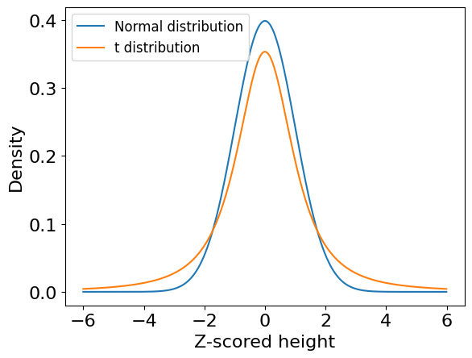
Part 14 (2 points)#
Examine the shape of the t distribution for different degrees of freedom compared to the standard normal distribution
Use
scipy.statsto generate t distributions with dof= 2, 4, 8, 16, 32.Plot the PDFs on the same axes and label them.
On the same axes, plot the standard normal distribution as a black line with
linewidth=2
# Your code here
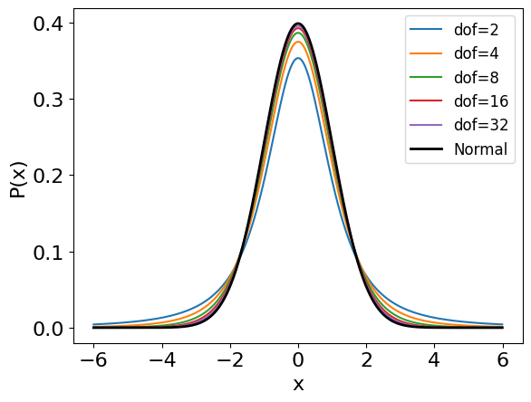
You should see that the t distribution coverges to the stanadard normal distribution as the number of observations (degrees of freedom) increases as the sample standard deviation becomes a better and better estimate of the population standard deviation.
Part 15 (2 points)#
Repeat Part 9, but instead of calculating the z statistic for each random sample, compute the t statistic. To calculate S appropriately, you will need to use
np.stdand set the optionddof=1(essentially dividing byn-1instead ofn). This will give you an unbiased estimate of the population standard deviation.Plot a histogram of these t statistics.
Overlay the standard normal distribution and the t distribution with the appropriate degrees of freedom.
🚩 Common mistake: np.std divides by n by default (ddof=0). For a t statistic computed from a small sample you need ddof=1; forgetting it runs without error but makes S too small and every t statistic too large.
See the lecture notes on t statistic for how the t statistic is computed.
# Your code here
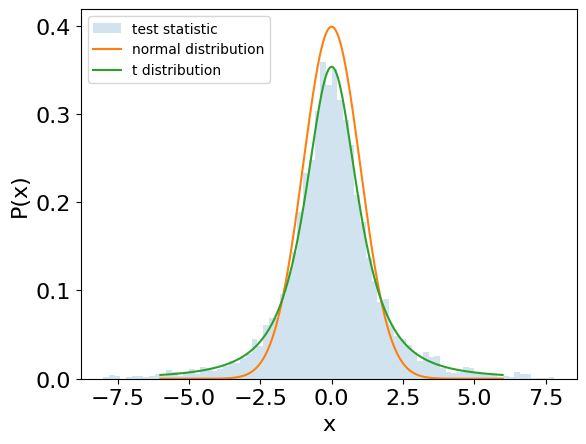
Great! Now you should see that the histogram of t statistics you calculated by randomly sampling heights matches the t distribution.
The t distribution and normal distribution look somewhat similar, even when the degrees of freedom is low, but the t distribution has much ‘heavier’ tails - more extreme values are much more likely to be observed by chance.
Part 16 (2 points)#
Now, calculate the t statistic for
classHeightsand print it.
Determine the probability of drawing a random sample from heights with a t statistic at least as large as you measured. As, before, do this two ways:
Method 1 (Monte Carlo): Directly find the proportion of random sample t statistics larger than the class sample t statistic. This is the estimated probability of drawing a sample with a mean as large (or larger) than the mean of
classHeightswhen the population standard deviation is not known a priori. To calculate S appropriately, you will need to usenp.stdand set the optionddof=1(essentially dividing byn-1instead ofn). This will give you an unbiased estimate of the population standard deviation.Method 2 (analytical): Find the value of the CDF of the t distribution (with the correct degrees of freedom) at the measured t value using
scipy.stats.
In both cases, the value calculated - the probability of drawing a random sample from heights with a mean (and t statistic) at least as large as the observed value - is the p-value associated with the test.
print(f't statistic = x.xx')
print(f'Probability (Monte Carlo) = xx.xx%')
print(f'Probability (analytical) = xx.xx%')
t statistic = x.xx
Probability (Monte Carlo) = xx.xx%
Probability (analytical) = xx.xx%
Part 17 (2 points)#
Finally, let’s run some t-tests using scipy.stats.
Step 1: Use the
stats.ttest_indfunction to find the probability thatclassHeightsis drawn from a normal distribution with the mean and standard deviation of theheightsdataset using a two-sample t test. Setequal_var=Trueandalternative=greaterto run a one-sided test. What is the p-value for this test?Step 2: Use the
ttest_1sampfunction to find the probability that the measuredclassHeightsare drawn from a normal distribution with a mean value equal to 66.99” (the mean ofheights). What is the p-value for this test?
See the lecture notes on The one-sample t-test for the one-sample test.
print(f'p-value #1: x.xxxx')
print(f'p-value #2: x.xxxx')
p-value #1: x.xxxx
p-value #2: x.xxxx
These values should match the probabilities you found in Part 12 and Part 16!
Here, we are performing two different kinds of t tests that make different assumptions. That they produce two different results is a explained by the fact that these tests have different levels of statistical power. We’ll explore this concept more in Homework 1.3!
Homework 1.3 (28 points)#
Learning objectives:
In this assignment, we will refine our python skills and delve into hypothesis testing. We will explore:
p-values
t-test variants
Statistical power
Part 1 (2 points)#
Load the same libraries that we used in Homeworks 1.1 and 1.2.
numpy(asnp)matplotlib.pyplot(asplt)scipy.stats(asstats)
Now is also a good time to set the default font size to 16.
# Your code here
Part 2 (2 points)#
Lets further examine key features of statistical tests, using the t-test from Homework 1.2 as an example. We’ll start by examining the p-value.
Create a standard normal distribution and draw 20 samples
Use a t-test to determine the probability of drawing a sample from a standard normal distribution with a mean at least as far from zero as the measured mean (the p-value) using
stats.ttest_1samp. Make sure you setalternative='two-sidedso that we can test whether our test statistic (the sample mean) is either larger or smaller than the hypothesized mean (zero).Repeat this procedure 5000 times and create numpy arrays that contain all of the t statistics (in a variable called
tstats) and p-values (pvals)Plot a histogram of
pvals.
# Your code here
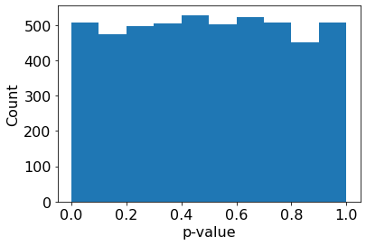
Part 3 (2 points)#
Lets take a closer look at those p-values.
Plot
pvalsversuststats. Make a scatter plot where every data point is indicated by a black dot.Repeat this plot on a second axis, but use
semilogyinstead ofplotto produce a plot with a logarithmic y-axis.
# Your code here
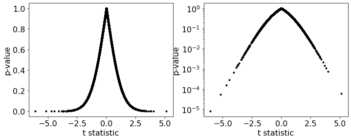
Here, you should see that samples with means more different than 0 are associated with smaller p-values.
The p-value represents the probability of your data having been observed under the null hypothesis of the test. In this case, the null hypothesis is that the data were drawn from a distribution with mean 0.
Samples with means near zero are likely to have been drawn from a zero-mean distribution. Samples with means more different than zero are less likely to be observed under the null hypothesis and have smaller p-values.
Part 4 (2 points)#
How often are particular p-values obtained by chance?
Calculate the proportion of entries in
pvalsless than 0.05.
# Your code here
The proportion of pvals less than 0.05 is x.xx
You should fine that p-values less than 0.05 are obtained about 5% of the time.
Here, we know the null hypothesis - that our data were randomly selected from a zero-mean distribution - is true. We expect small (less than 0.05) p-values relatively rarely (5% of the time).
The p-value is the probability of observing a result as extreme or more extreme under the assumption that the null hypothesis is true.
For example, a p-value of 0.05 indicates that 5% of the time we expect to observe a sample mean at least that different from the hypothesized mean of zero. A p-value of 0.001 would indicate a very rare event - one that happens with 1/1000 odds - under the assumptions of the null hypothesis.
Low p-values indicate that the null hypothesis may not be correct.
Part 5 (2 points)#
Let’s examine other variations of the t-test.
Repeat Part 2, but instead use
stats.ttest_1sampto test whether each random sample has a mean less than zero by settingalternative='less'. This is called a left-tailed test because we are testing whether our test statistic lies in the left tail of the null distribution.Repeat Part 2 and test whether the mean of each random sample is greater than zero (right-tailed test). This is called a right-tailed test.
Plot
pvalsversuststatsas in Part 3 in each case usingsemilogy. Plot them on the same axes in different colors with an appropriate legend.
See the lecture notes on One- vs. Two-tailed tests for choosing the tail of a test.
# Your code here
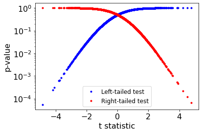
In all cases, the p-value tells you the probability of observing an outcome under the assumption that the null hypothesis is true.
1-p is the probability of the opposite outcome. Here,the null hypotheses are:
Two-sided test: The sample was drawn from a distribution with mean 0.
Left-tailed test: The sample was drawn from a distribution with mean 0 or greater
Right-tailed test: The sample was drawn from a distribtuion with mean 0 or less.
Part 6 (2 points)#
Repeat Parts 2-4, but compare your data to a distribution with mean 0.5 (instead of zero) using the same procedure
# Your code here
The proportion of pvals less than 0.05 is x.xx
The proportion of pvals greater than 0.95 is x.xx
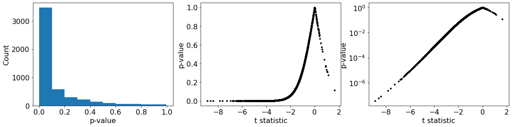
In many instances, we calculate a p-value < 0.05, which indicates that the random sample was likely drawn from a distribution with a mean different than 0, as expected.
But not always! Sometimes we still select samples with associated p-values that are large, indicating that the null hypothesis cannot be rejected. This indicates a Type II error - failing to reject a false null hypothesis. This is also called a false negative.
The type II erorr rate is closely related to the statistical power of a test - its ability (or inability) to correctly reject a null hypothesis when an alternative hypothesis is actually true.
We will examine statistical power a little more below.
Part 7 (2 points)#
Repeat Part 6 but run a left-tailed t-test for each sample instead of a two sided test.
Calculate the proportion of samples with associated p-values less than 0.05.
Compare this proportion to the proportion of p-values less than 0.05 when you used the two-sided test
# Your code here
Left-tailed test: The proportion of pvals less than 0.05 is x.xx
Two-sided test: The proportion of pvals less than 0.05 is x.xx
Here, you should find a larger proportion of p-values less than 0.05 using the left-tailed test.
SHORT ANSWER (2 points): Explain why the left-tailed test yields a p-value less than 0.05 (correctly rejects the null hypothesis) more frequently than the two-sided test in terms of the area under the probability density function of the t-statistic.
Part 8 (2 points)#
Next, let’s examine how stastical power changes as a function of sample size.
Run the same experiment as above with several variations. Create a standard normal distribution and draw samples of size 4, 8, 16, 32, 64, 128, and 256.
Use a t-test (
stats.ttest_1samp) to test two null hypotheses: (1) that the data were drawn from a distribution with mean 0.5 and (2) that the data were drawn from a distribution with mean 0.25.Repeat the steps above 500 times (you will need to use two nested
forloops).For each case, calculate the proportion of p-values less than 0.05.
Plot the proportion of p-values less than 0.05 vs. the sample size (true positive rate) with a logarithmic x-axis.
On the same axes, plot the false negative rate.
Choose iine styles that ensure the lines are easily distinguishable
# Your code here
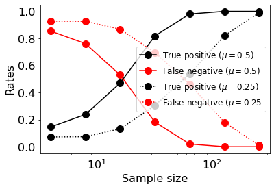
Here, you should see that the true positive rate increases and the false negative rate decrease as the sample size increases.
In this example, we are drawing samples from a mean-zero distribution and testing the hypothesis that the were drawn from distributions with mean 0.25 and mean 0.5. In all cases, the null hypothesis is false. We are more likely to reject the null hypothesis as the sample size increases (and our sample mean converges to the population mean) and as the effect size (difference between the actual population mean and the hypothesized population mean) increases.
Increasing sample size and/or effect size increases statistical power, the probability of correctly rejecting an incorrect null hypothesis (black lines above).
Thus far, we have examined one-sample t-tests, where we attempt to determine whether one sample of data was drawn from a distribution with a hypothesized mean.
Next, we will examine a two-sample test, where we will compare two samples of data and determine whether they were likely drawn from the same distribution. There are several flavors of the two-sample t-test.
We’ll start with the simplest version, when the size of each sample is the same, and when we draw the two samples from populations that we assume to have the same (or similar) standard deviations. In this case the test statistic (still called t) is:
\({\displaystyle t={\frac {{\bar {X}}_{1}-{\bar {X}}_{2}}{s_{p}{\sqrt {\frac {2}{n}}}}}}\)
Where
\({\displaystyle s_{p}={\sqrt {\frac {s_{X_{1}}^{2}+s_{X_{2}}^{2}}{2}}}}\)
and \(s_{X_{1}}^{2}\), \(s_{X_{2}}^{2}\) are the unbiased (divide by \(n-1\) rather than \(n\)) estimates of the sample variances.
Our test statistic, t, still follows the same t distribution we examined in Homework 1.2.
When the two samples have different sizes, or different variances, the analytical expression for t becomes a bit more complex.
Part 9 (2 points)#
Here, we will only calculate a two-sample t-test using scipy.stats, although we could use the analytical expressions above (along with the expression for the PDF of the t distribution) to determine p-values directly if we so chose.
Draw 20 samples from a normal distribution with mean 0 and standard deviation 1 (Sample 1) and an additional 20 samples from a distribution with mean 0.5 and standard deviation 1 (Sample 2).
Use
scipy.stats.ttest_indto determine the probability that these samples were drawn from distributions with the same mean (the p-value for a two-sided test).In addition, use
scipy.stats.ttest_1sampto test whether Sample 1 was drawn from a distribution with mean 0.5 using a two-sided test. Record the p-value for this test as well.Repeat these steps 5000 times.
For each case, calculate the proportion of p-values less than 0.05.
See the lecture notes on Variation: two-sample t-test (equal variances) for the two-sample test.
# Your code here
SHORT ANSWER (2 points): Which test has greater statistical power? Explain why. When would you use one test versus the other?
Part 10 (2 points)#
In Part 9 we examined a two-sample t-test using scipy.stats.ttest_ind. There, ‘ind’ refers to a test of independent measurements. That is, selecting a particular value in Sample 1 does not affect the values expected in Sample 2.
Next, we will examine paired samples and the associated paired t-test.
For example, suppose we measure how long it takes 20 subjects to run a 5K race, subject them to a training regimine, and then measure how long it takes them to run a second 5K to determine if the training regimine reduces their 5K time.
In this case, the samples are paired. Exactly one measurement in Sample 1 and one measurement in Sample 2 correspond to each subject. Each person’s first 5K time might tell us something about what to expect from their second 5K time. We do not have two independent samples from the population of 5K times in this case.
Let’s simulate this scenario and visualize the experiment using some new kinds of plots.
Load the datafile located at the following URL using
np.genfromtxtinto a variable calledraceData:
https://raw.githubusercontent.com/BU-BME-DataSci-ML/Spring-2023/main/Homework1/RaceData.csv
Create variables called
race1andrace2from the first and second columns ofraceData.Compare these two datasets with a boxplot.
Use
scipy.stats.ttest_indto calculate the probability that these two datasets were drawn from populations with the same mean.Plot a scatterplot of
race2vs.race1. You should see that these two samples are clearly correlated and, thus, not independent. Include a dotted line indicating where y=x.Display the paired data with lines connecting paired data points (as shown below).
See the lecture notes on Paired t-test (repeated measures) for when and why to pair measurements.
# Your code here
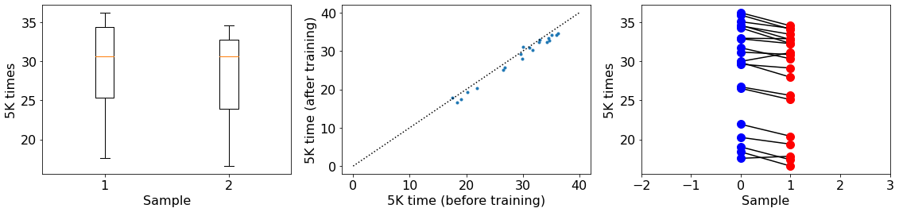
Here, from the boxplots, you should see that the distributions of the data are quite similar. In the second and third plots, however, you should see a systematic change in the paired measurements in the first and second samples.
How do we test whether the training regimine had the desired effect on 5K times? We’ll compare two kinds of tests below
Part 11 (2 points)#
Apply the upaired two-sample t-test as in Part 8. Report the p-value.
Apply a paired t-test (
stats.ttest_rel) to these two samples as well. Report this p-value as well.
🚩 Common mistake: A paired test assumes entry i of Sample 1 and entry i of Sample 2 belong to the same subject. If you sort or shuffle one array independently, stats.ttest_rel still returns a p-value but it is meaningless.
# Your code here
Unpaired t-test p-value = x.xx
Unpaired t-test p-value = x.xx
These two tests should yield very different results. Why is this?
While ostensibly a two-sample test, the paired t-test is really a test of the differences between the paired samples (i.e. the values of race2-race1).
While race1 and race2 have similar means and variances, the differences have a mean that can be confidently differentiated from zero.
We can see this clearly by plotting a histogram of the differences, the values of race2-race1.
Part 12 (2 points)#
Plot a histogram of the values of
race2-race1, the changes in each individuals 5K time.
# Your code here
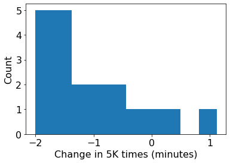
The values of race2-race1 appear unlikely to have been drawn from a distribution with a mean different than zero, indicating a change in race times, even though the values in race1 and race2 follow similar distributions.
Here, the paired t-test is really a one-sample t-test where we are comparing the difference in values between race1 and race2 with a hypothesized mean of zero. That is, the null hypothsis is that the values in race2-race are drawn from a distribution that is zero mean.
Homework 1.4 (18 points)#
Learning objectives:
In this assignment, we will continue our exploration of statistics and hypothesis testing. We will explore:
Non-parametric statistics
The bootstrap
Part 1#
Load the same libraries that we used in Homeworks 1.1 and 1.2.
numpy(asnp)matplotlib.pyplot(asplt)scipy.stats(asstats)
Now is also a good time to set the default font size to 16.
# Your code here
Let’s examine the statistical power of parametric and non-parametric statistical tests.
First, we will compare the 1-sample t-test (parametric) and the sign test (nonparametric).
Part 2 (2 points)#
Draw a random sample from a standard normal distribution of size
Nsamp = 16.Use a t-test to determine the p-value for a two-sided test of the null hypothesis that the data were drawn from a population with a hypothesized mean
HypMean = 0.5.Repeat this procedure 500 times.
Find the true positive rate - the proportion of the 500 repetitions in which the null hypothesis (which we know to be false) was correctly rejected at an \(\alpha\) level of 0.05.
# Your code here
True positive rate: x.xxx (effect size 0.5)
Part 3 (2 points)#
Repeat Part 2, but set HypMean = 0
Find the false positive rate - the proportion of the 500 repetitions in which the null hypothesis (which we know to be correct) was incorrectly rejected at an \(\alpha\) level of 0.05.
# Your code here
False positive rate: x.xxx (effect size 0.0)
Part 4 (2 points)#
Use similar procedures to find the power (true positive rate) for effect sizes of 0.5 and 1.0 (
HypMean=0.5, 1.0) as well as the false positive rate (HypMean=0) of the 1-sample t-test whenNsampis equal to 4, 8, 16, 32, and 64 at an \(\alpha\) level of 0.05.This can be accomplished, for example with three nested
forloops.Plot the results as shown below using
semilogx.
# Your code here
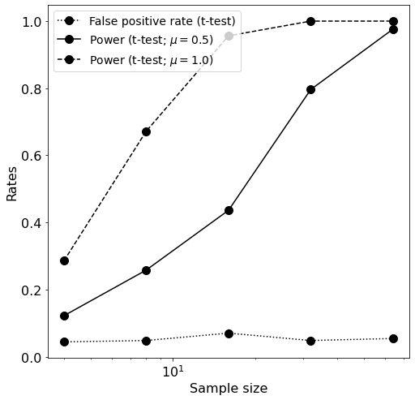
Part 5 (2 points)#
Repeat Part 4, but use a sign test instead of a t-test.
To perform a sign test:
Determine the number of values in the random sample greater than
HypMean. Call this numbernumPositives.Use a binomial test (
stats.binomtest) to determine the probability of observing a value of numPositives at least as extreme as the observed number (a two-tailed test) under the assumption that the probability that each sample is greater thanHypMeanis 0.5.Find the p-value for this test.
NOTE: the output of stats.binomtest is a structured a little differently than other statistical tests we have used so far. You may have to look up the documation for stats.binomtest to figure out how to access the p-value for the test.
# Your code here
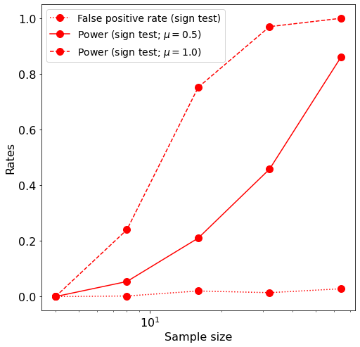
Part 6 (2 points)#
Plot the results of Parts 4 and 5 on a common axis
Make the plot size large using a command like `fig.set_size_inches(10, 10)
# Your code here
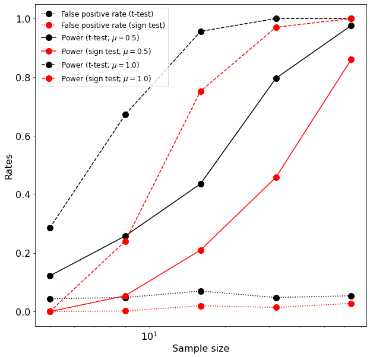
Part 7 (2 points)#
Finally, we’ll explore the bootstrap.
First, create a population with an unusual distribution. Use the following code to create the variable
population:
np.random.seed(seed=3)
Nvals1 = 8000
Nvals2 = 2000
vals1 = stats.norm.rvs(loc=-3, scale=1, size=Nvals1)
vals2 = stats.norm.rvs(loc=3, scale=1, size=Nvals2)
population = np.concatenate((vals1, vals2), axis=0)
The first command (np.random.seed(seed=3)) ensures that the same random numbers are generated each time the code runs. The number 3 is a bit arbitrary. We just want to set the seed to the same number each time the code is run.
Plot a histogram of values in the population. Use 50 bins and set
density=True.
# Your code here
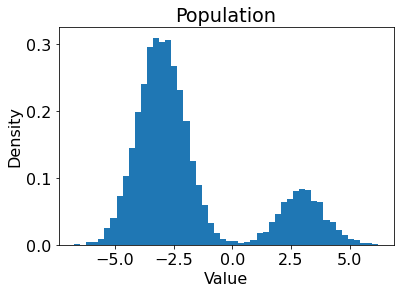
Part 8 (2 points)#
Consider a statistic: the standard deviation of samples of size Nsamp=16 drawn from population. What is the sampling distribution of this statistic?
Estimate the sampling distribution using a Monte Carlo Simulation.
Set the random seed to 3 (
np.random.seed(seed=3))Draw 16 samples randomly from the population (with replacement) using
np.random.choice.Find the standard deviation of the sample.
Repeat this procedure 10,000 times and store the sample standard deviations in a variable called
sdDistribution.Plot a histogram of
sdDistributionas above.
# Your code here
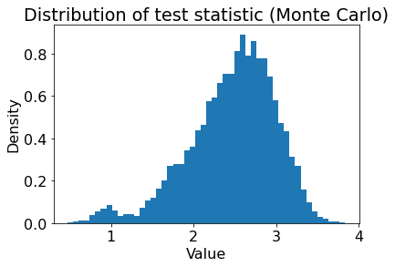
Part 9 (2 points)#
Now, let’s try to bootstrap the same distribution.
Set the random seed to 3 (
np.random.seed(seed=3)).Draw only a single sample of size
Nsamp=16frompopulation. Call itobservedData.
Suppose we don’t have access to population and, instead, all we have is observedData. We can use the bootstrap method with observedData to estimate the distribution of the test statistic. To do this, do the following:
Draw a random sample of size
Nsamp=16fromobservedData. Ensure that you sample with replacement or else the sample will be the same asobservedData. Calculate the standard deviation of this random sample.Resample
observedData(by repeating the previous step) 10,000 times and calculate the standard deviation each time. Store the standard deviation values in a variable calledbootDistribution.Plot a histogram of both
sdDistributionandbootDistributionin the same way as above. Setalpha=0.3so that the histograms are partially transparent.
# Your code here
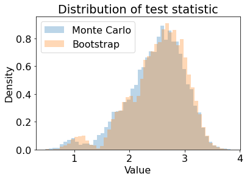
Part 10 (2 points)#
Find the 5-95% confidence interval on the test statistic (the sample standard deviation) using the Monte Carlo simulution and the bootstrapped distribution.
Use
np.percentileto find the 5th and 95th percentile ofsdDistribution.Use
np.percentileto find the 5th and 95th percentile ofbootDistribution.
# Your code here
5 - 95% confidence interval: x.xxx - x.xxx (Monte Carlo)
5 - 95% confidence interval: x.xxx - x.xxx (bootstrap)